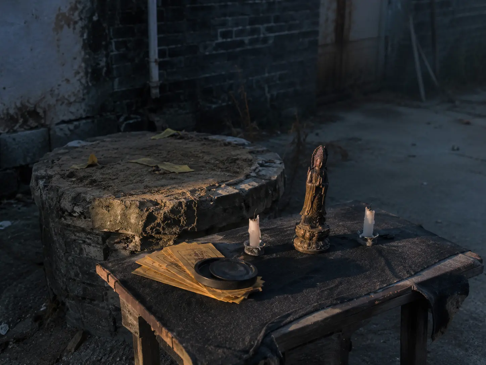

三下乡 › 青云村
07-28 · 救援经过
村西仓库 · 07:52。
07:52 · 破门
民警出示证件后，看管仓库的保安开了锁。铁皮门后面还有一扇内门，从外面用链条锁着——那是后来加的。
隔间的窗户上钉着木板，就是照片里那样。TIU 在里面，蜷在铁架床上。瘦了一圈，手腕上有勒痕。
他看见我们，第一句话是："你们真的搜到了。"
第二句话是："别删那些页面。"
人群里，他第一个认出你："暮鸢，我就知道是你。"
08:20 · 控制
赵志强被当场控制。看管仓库的保安、负责后台运维的技术部人员，也一并被带走。财务部负责人在临水县办公室被带走。员工名录里那位"借调外省"的跟单员，几天后也在省外落网——五个人，一个都没少。
仓库里找到了 TIU 的手机（关机，SIM 卡被取出）、GPS 设备，以及 20 个"假设备"的空机箱——排得整整齐齐，像在等验收。
08:40 · 后墙外 · 老井边
空机箱清点完后，民警绕到仓库后墙外。老井边，一块黑布盖着一张旧木桌——桌上立着一尊看不清面目的神像，两边白蜡烛烧了半截，一摞黄纸符咒压着砚台。
没有人说得清那是什么。现场记了"疑似祭祀用品"，封存带走。
20 个空机箱排得整整齐齐，像在等验收。那天早上，没有人把它们和仓库后墙外那张桌子联系在一起。
返程签到表上缺的那一个名字，今天补上了。

6 人，全勤
07-15 出发 6 人。
07-22 返程签到 5 人。
07-28，6 人全部上车。
那张签到表，他签在了自己名字那一栏。